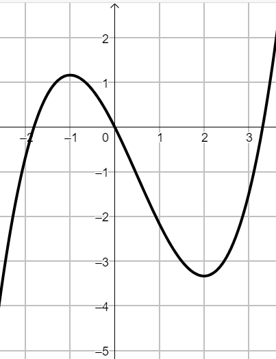

Esercizio 1
Individuare la derivata delle funzioni
\[
f(x) = ln\left(\dfrac{3 -x}{x^2 +x}\right) \qquad g(x) =\sqrt{x^3\,e^{x}}
\]
Esercizio 2
Il grafico \(\Omega\) in figura è associato alla funzione \(f\)
-
Stabilire i valori della \(x\) tali che \(f'(x) = 0\).
-
Stabilire gli intervalli in corrispondenza dei quali la tangente ad \(\Omega\) è decrescente.
-
Stabilire se la funzione \(y = \dfrac{1}{3}x^3 -\dfrac{1}{2}x^2 -2x\) può essere rappresentata dal grafico \(\Omega\)

Esercizio 3
Dopo averne individuato il dominio, discutere la continuità della funzione
\[
f(x) =
\begin{cases}
\sqrt{\dfrac{x - 1}{x + 1}} \quad se \,\,x \lt -1
\\\\
ln(x + 2) + x \quad se \,\,x \geq -1
\end{cases}
\]
e studiare il suo comportamento in corrispondenza degli estremi del dominio, individuando eventuali asintoti.
Esercizio 4
Stabilire il valore dei parametri \(a\) e \(b\) tali che la funzione \(f(x) = cos(x)\,e^{ax} + b\) intersechi l'asse \(y\) nel
punto di ordinata \(4\) ed abbia in esso la tangente perpendicolare alla tangente al grafico della funzione
\(g(x) = x^2 + \) nel punto di ascissa \(x = 1\)
Esercizio 1
Individuare la derivata delle funzioni
\[
f(x) = \sqrt{\dfrac{5x -1}{-3x +1}} \qquad g(x) =ln(x^2\,sin(x))
\]
Esercizio 2
Il grafico \(\Gamma\) in figura è associato alla funzione \(f\)
-
Stabilire i valori della \(x\) tali che \(f'(x) = 0\).
-
Stabilire gli intervalli in corrispondenza dei quali la tangente a \(\Gamma\) è crescente.
-
Stabilire se la funzione \(y = -\dfrac{1}{3}x^3 + \dfrac{5}{2}x^2 - 4x\) può essere rappresentata dal grafico \(\Gamma\)
Esercizio 3
Dopo averne individuato il dominio, discutere la continuità della funzione
\[
f(x) =
\begin{cases}
\sqrt{-x +2} -x^2 + 4 \quad se \,\,x \leq -2
\\\\
\ln\left(\dfrac{-x + 1}{x +2}\right) \quad se \,\,x \gt -2
\end{cases}
\]
e studiare il suo comportamento in corrispondenza degli estremi del dominio, individuando eventuali asintoti.
Esercizio 4
Stabilire il valore dei parametri \(a\) e \(b\) tali che la funzione \(f(x) = a\,x\cdot cos(x-2) + b\) passi per il
punto \(P(2\,;\,\,1)\) ed abbia in esso la tangente parallela alla tangente al grafico della funzione \(g(x) = x^3 + bx\)
nel punto di ascissa \(x = 1\)